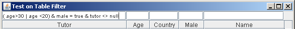

TableFilter

TableFilter is a set of Swing components to support user-driven filtering on tables: it is, currently, the more comprehensive table filter for Java (Swing).
It can handle complex expressions, or simple selections. You can try it with this example application (Java 5 version / Java 6 version)

Its is freely available, under MIT license. It works under Java 5 or later.
This documentation includes:
- Description of the main component, a header for the JTable.
- Information on the supplied parsers, supporting regular expressions or complex compound expressions. Also, support on these parsers for specific types, including dates.
- Description of the different filter editors directly available with this library.
- How to use the filter editors as standalone components.
- Specific information for Java 5 users, as filtering is a feature available on the JTable only since Java 6.
- Examples provided with the source distribution.
- References to the javadoc documentation.
- Version and license information.
- Frequently asked questions.